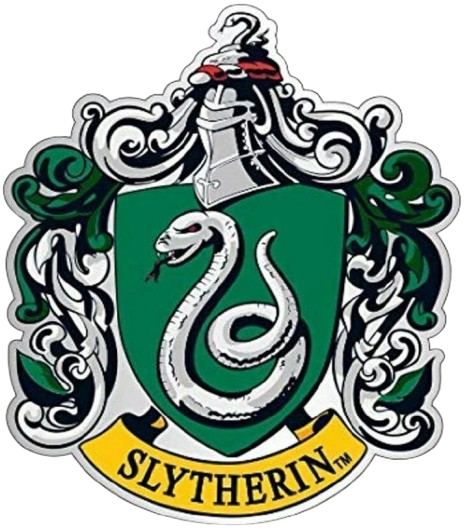

Sonserina, fundada por Salazar Slytherin, é uma das quatro casas da Escola de Magia e Bruxaria de Hogwarts. Seu animal emblemático é uma serpente e suas cores são verde e prata. Principais características: Liderança, Desenvoltura, Astúcia, Orgulho e Ambição.
 Voltar para o Chapéu Seletor